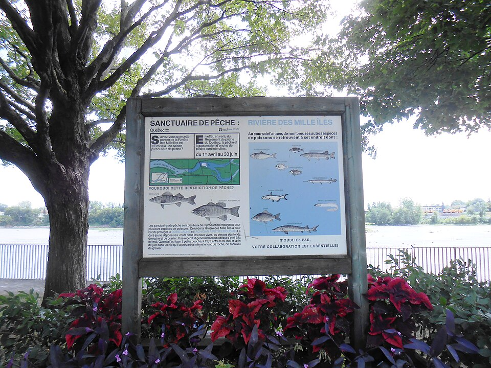
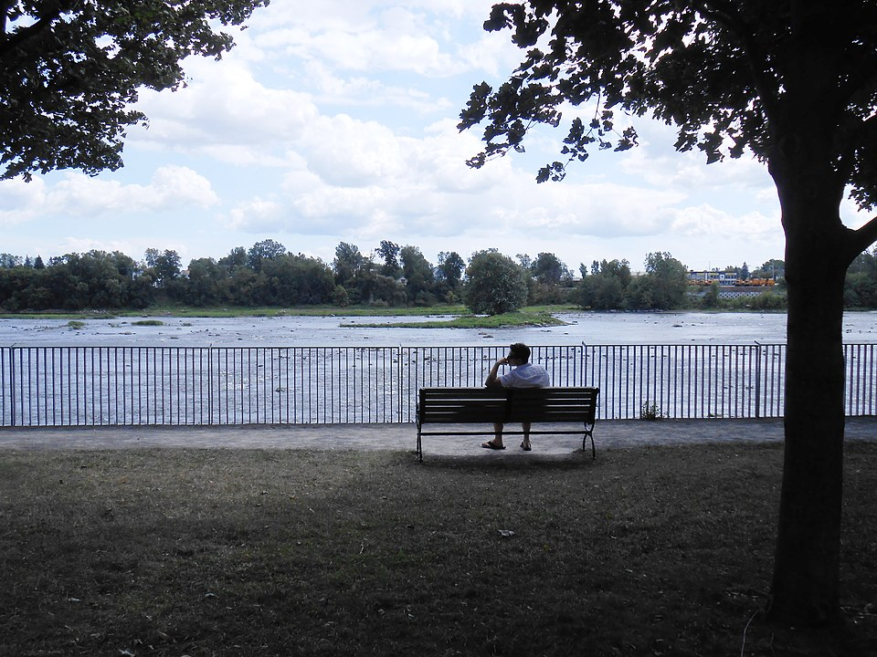

The Rivière des Mille-Îles is a winding, island-dotted river running along the north shore of Île Jésus — and it's arguably the most kayak-friendly fishery within 30 minutes of Montreal. Shallow backwaters, protected island passages, and surprising numbers of pike and bass make it a river worth knowing well.

What You're Fishing
The Mille-Îles runs roughly 40 km along the north shore of Laval, flowing from Lac des Deux-Montagnes in the west to the confluence with the Rivière des Prairies near Terrebonne in the east. It's shallow, slow-moving, and densely vegetated — ideal conditions for northern pike and both species of bass.
Northern pike are the headline attraction, particularly from April through June when post-spawn fish crowd the warm, weedy shallows. Largemouth bass dominate the deeper backwaters and lily pad flats through summer. Smallmouth show up in the clearer, harder-bottomed stretches of the main channel. Yellow perch are abundant throughout the river and provide reliable action on slower days. Common carp are present in numbers and will test your tackle on a light rod.
Why Kayaks Win Here
The Mille-Îles has something most Southern Quebec fisheries don't: a network of island passages and backwater channels that are simply inaccessible to motorized boats. A kayak or canoe can follow a shoreline into a weedy bay, slide between two islands, and fish water that hasn't seen a lure all season. That access advantage is real, and the fish respond to it.
Water depths through most of the river average 1 to 3 metres, with deeper pools reaching 5 to 6 metres in the main channel. You won't bottom out a kayak on the vast majority of routes, but you will find areas where a motorboat would be grinding on rocks.
The anglers catching the most pike here are the ones paddling into the backs of flooded bays in April, not the ones running the main channel. Getting off the obvious water is what separates a slow day from a memorable one.
Public Access Points
The Mille-Îles is well-served by public access on both the Laval (south) side and the north shore communities.
Parc de la Rivière-des-Mille-Îles, Laval — Main Hub
The best starting point for most anglers. Located at 345 boulevard Sainte-Rose, Laval, the park operates a nature centre and manages the island archipelago that forms the heart of the river system. Kayak and canoe rentals are available on-site from May through September — you don't need to own a boat to fish here. Guided paddling excursions also run through the season if you want local knowledge built into your trip.
The park's boat launch gives access to Île Perry and the surrounding island channels. These passages are shallow, calm, and sheltered — exactly the kind of water where largemouth hold in the weed edges and pike ambush from structure. This is the best access point in the system for first-timers.
Rosemère Municipal Launch
Located on the north shore in Rosemère, near the foot of boulevard Labelle, this free public launch gives access to the wider, more open section of the river between Rosemère and Sainte-Rose. This stretch sees more wind exposure than the island passages further east, but it holds productive pike habitat along the weed edges and smallmouth in the current breaks near the channel bends.
Deux-Montagnes — Western End
At the western end of the river where it meets Lac des Deux-Montagnes, shoreline access in Deux-Montagnes provides entry to the transition zone between lake and river. This is a productive area for spring pike, particularly in April and early May when fish move from the lake into the river to spawn. Access the waterfront via boulevard Arthur-Sauvé near the Deux-Montagnes train station.
Saint-Eustache & Boisbriand — North Shore
Several informal shoreline access points exist along the north shore through Saint-Eustache and Boisbriand. The Parc Deux-Rivières area in Saint-Eustache (near where the Rivière du Chêne meets the Mille-Îles) offers good bank fishing access for perch and pike during the spring run.
Terrebonne — Eastern End
The eastern end of the river near Île-des-Moulins in Terrebonne offers shore fishing access and a public boat launch. This section of the river is narrower and has more current than the western end. Smallmouth bass hold in the rocky bottom stretches here from June onward, and walleye occasionally appear in the deeper pools near the confluence.

Where to Fish: Best Sections
The Island Archipelago (Laval / Parc de la Rivière)
The central island cluster managed by Parc de la Rivière-des-Mille-Îles is the most productive fishing area on the river. Multiple island passages create protected backwater habitats that warm up quickly in spring, drawing post-spawn pike before any other part of the river turns on. Work the transitions between open water and emergent vegetation with spinnerbaits and jerkbaits in April and May. By July, shift to weedless rigs and topwater frogs for largemouth in the deeper lily pad flats.
The Rosemère–Sainte-Rose Stretch
This mid-river section has wider open water and a mix of hard sandy bottom and weed patches. It's the best section for smallmouth bass, which prefer the harder substrate and current seams along the main channel bends. Drop-shot rigs and finesse soft plastics work well from mid-June onward. Pike are present along the weed edges but spread out more than in the tight island passages.
The Deux-Montagnes Transition
Where the river opens into Lac des Deux-Montagnes is a prime spring staging area. Pike congregate here in numbers during the April–May run, and largemouth set up on the shallow mud flats as the water warms. Once bass season opens in mid-June, the weed mats near the river mouth hold fish through summer.
Seasonal Timing
The first good fishing of the year. Post-spawn pike crowd the shallow bays and flooded vegetation. Cold water — dress for it — but the fishing can be exceptional. Jerkbaits, large spinnerbaits, and swimbaits all work. Focus on any bay with southern exposure that warms up first.
Pike remain active through May as the water warms. Bass season opens mid-June and immediately produces well — largemouth in the backwaters, smallmouth in the current sections. Best overall variety of the season.
Largemouth bass fishing is at its best in the island backwaters. Topwater lures early morning, weedless rigs through the day. Pike go deeper and become harder to target. Fish before 9 a.m. or after 6 p.m. to avoid the worst heat and paddler traffic.
As water temperatures drop, pike become aggressive again. Fall is the second-best period of the year for pike fishing on the Mille-Îles. Bass remain active until the water approaches 10°C. Paddler and recreational traffic drops sharply after Labour Day — the river feels like yours alone.
Techniques That Work Here
The Mille-Îles rewards presentation variety more than any single technique. The sheltered nature of the island passages means fish aren't spooked by overhead noise as much as on open lakes, but they do see lure pressure throughout the season.
- Spring pike (April–May): Jerkbaits (Rapala X-Rap, Savage Gear), large spinnerbaits (3/4 oz to 1 oz), swimbaits parallel to weed edges
- Largemouth bass (summer): Topwater frogs over pads, Texas-rigged soft plastics in vegetation, weedless swimbaits along edges
- Smallmouth bass (main channel): Drop-shot with finesse worms, ned rig on harder bottom, small crankbaits in current seams
- Yellow perch: Small jigs tipped with worm, Beetle Spins, live minnows under a float near any structure
- Carp: Boilies or sweet corn on a hair rig; fish near weed beds and muddy shallows in late summer
Regulations to Know
The Rivière des Mille-Îles straddles two fishing zones. The south shore (Laval side) falls under Zone 8; the north shore falls under Zone 7. Regulations may differ between the two sides for some species, so confirm which bank you're fishing from when checking rules.
- Bass (both species): Closed season in spring; opens mid-June (Zone 8) — confirm Zone 7 opener at québec.ca
- Northern Pike: Open season with daily bag limits; check current year for quotas
- Walleye: Slot limit in effect; verify current minimums
- Licence: Valid Quebec sport fishing licence required for all anglers 18 and over

20+ years fishing Quebec's freshwater systems. Kayak angler, catch-and-release advocate, and founder of Sub Urban Anglers.
Read More About Me